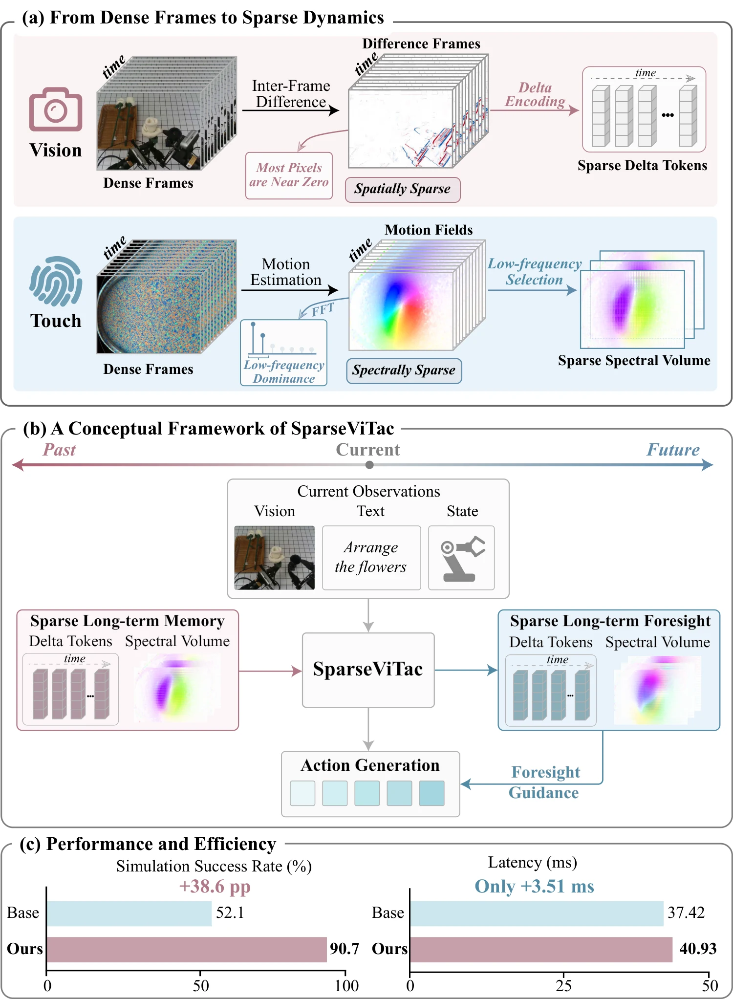
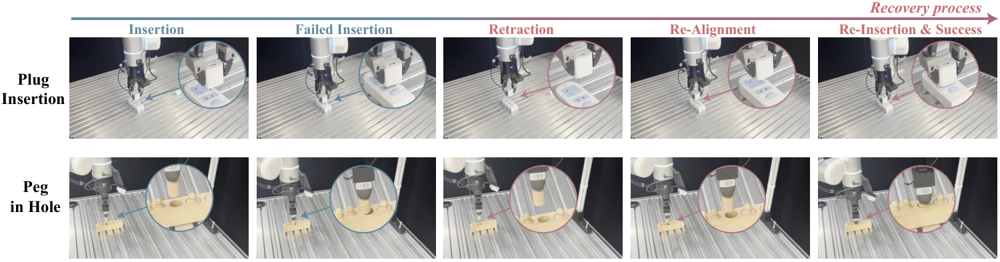
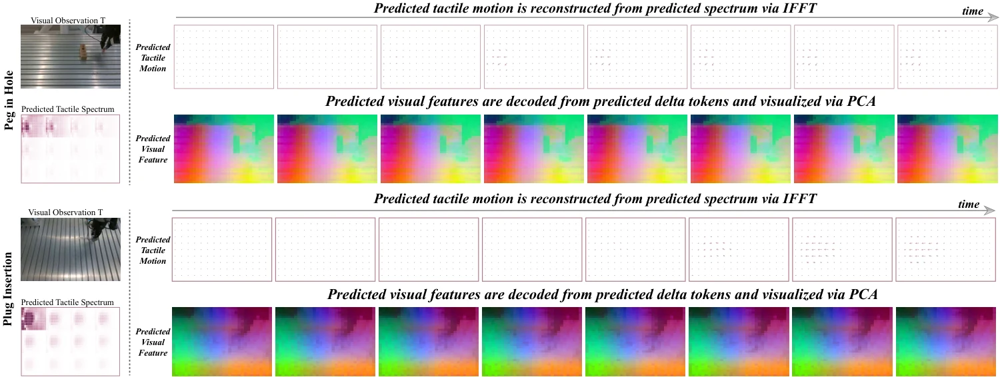

SparseViTac
Efficient World-Action Modeling via Sparse Visuo-Tactile Dynamics for Contact-Rich Manipulation
Overview
What should a robot remember about a contact, and what should it predict next?
SparseViTac represents interactions through changes in vision and touch. Visual changes often occupy a small part of the image, while much of the energy in tactile motion concentrates at low temporal frequencies. Compact representations of these changes let the policy retain interaction history and predict future dynamics to guide its actions.
From frames to sparse dynamics
Visual change
A delta tokenizer compresses the transition between two visual feature maps into one token. Memory uses transitions between sampled historical frames. Foresight predicts changes from the current frame to selected future frames.
Tactile motion
A temporal Fourier transform summarizes horizontal and vertical sensor motion. The default representation retains the lowest 12 frequency bins from a 48-frame window.
Memory and foresight
The model combines sparse history with the current image, instruction and robot state. Its predicted visual tokens and tactile spectra guide action generation.


Real-world demonstrations
Explore six contact-rich tasks on the dual-arm ALOHA and single-arm Flexiv platforms. Each clip shows a 16-second excerpt at the recorded speed.
Performance and efficiency
Across ten simulation tasks, mean success rises from 52.1% with the base policy to 90.7%. Inference latency increases from 37.42 to 40.93 ms.
Real-world success by task
20 trials per task. Bars show final task success on a 0–100% scale.
Recovery during insertion
After an unsuccessful insertion, the robot retracts, realigns the object and tries again. The sequences show this behavior with a plug and a peg.

View predicted visual and tactile dynamics
